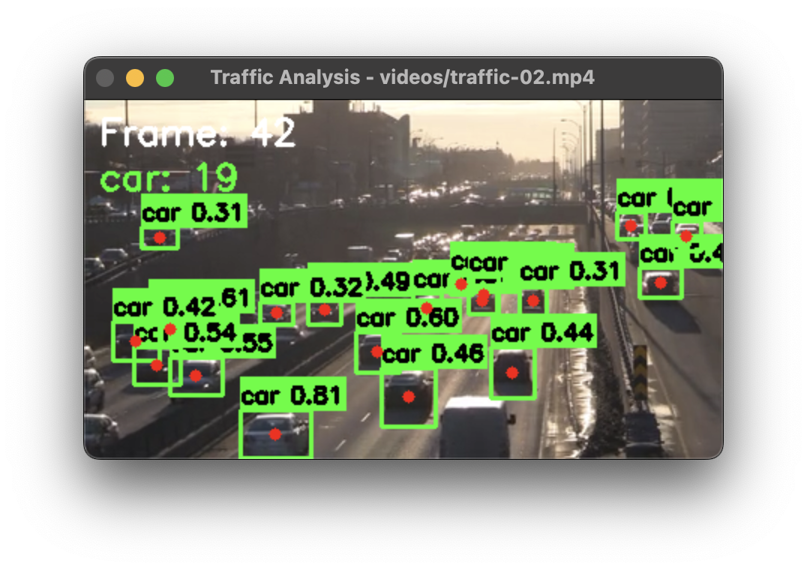

Example Outputs
Basic Object Detection
Detection results showing bounding boxes, class labels, and confidence scores for common objects in a street scene.

Advanced Detection
Filtered detection results focusing on specific classes with custom visualization settings and object tracking.
Basic Object Detection
from yolozone import ObjectDetector
import cv2
# Initialize detector with default model
detector = ObjectDetector()
# Read image
img = cv2.imread("image.jpg")
# Detect objects with custom confidence threshold
results = detector.detect_objects(
img,
device="cpu", # Use CPU for inference
conf=0.35 # Set confidence threshold
)
# Draw detections with custom color
img, detections = detector.draw_detections(
img,
results,
color=(0, 255, 0), # Green color
thickness=2 # Line thickness
)
# Print detected objects
for class_name, conf, box in detections:
x1, y1, x2, y2 = box
print(f"Found {class_name} at ({x1},{y1},{x2},{y2}) with confidence {conf:.2f}")
# Save output image
cv2.imwrite("output.jpg", img)Key Features
- Configurable confidence threshold for filtering detections
- Device selection (CPU/CUDA/MPS) for optimal performance
- Customizable visualization options
- Detailed detection information including coordinates
Real-time Video Detection
import cv2
from yolozone import ObjectDetector
# Initialize detector
detector = ObjectDetector(model="yolov8s.pt")
# Open video capture
cap = cv2.VideoCapture(0) # Use 0 for webcam
while True:
ret, frame = cap.read()
if not ret:
break
# Detect objects with tracking enabled
results = detector.detect_objects(
frame,
device="cpu",
conf=0.35,
track=True # Enable tracking
)
# Draw detections
frame, detections = detector.draw_detections(frame, results)
# Count objects by class
counts = detector.count_objects(results)
# Display counts
y_pos = 30
for cls, count in counts.items():
text = f"{cls}: {count}"
cv2.putText(frame, text, (10, y_pos),
cv2.FONT_HERSHEY_SIMPLEX, 0.6,
(0, 255, 0), 2)
y_pos += 25
# Show frame
cv2.imshow("Object Detection", frame)
if cv2.waitKey(1) & 0xFF == ord('q'):
break
cap.release()
cv2.destroyAllWindows()Features Demonstrated
- Real-time video processing
- Object tracking integration
- Live object counting
- On-screen statistics display
Advanced Detection Features
# Initialize with a specific model
detector = ObjectDetector(model="yolov8l.pt") # Larger model for better accuracy
# Define classes of interest
target_classes = ['person', 'car', 'truck', 'bicycle']
# Process image
results = detector.detect_objects(
img,
device="cuda", # Use GPU if available
conf=0.4 # Higher confidence threshold
)
# Get filtered detections
img, detections = detector.draw_detections(
img,
results,
classes=target_classes, # Only show specified classes
color=(255, 0, 0), # Red color for boxes
thickness=2
)
# Get object counts
counts = detector.count_objects(results, classes=target_classes)
print("\nObject Counts:")
for cls, count in counts.items():
print(f"{cls}: {count}")
# Get object centers for analysis
centers = detector.get_object_centers(results)
print("\nObject Centers:")
for cls, points in centers.items():
print(f"{cls}: {len(points)} objects found")
for x, y in points:
print(f" - Center at ({x}, {y})")Advanced Features
- Class filtering for targeted detection
- Object center point calculation
- Custom model selection
- GPU acceleration support
Performance Tips
- Use appropriate model size for your needs (n/s/m/l/x)
- Adjust confidence threshold based on use case
- Enable GPU acceleration for faster processing
- Filter classes to reduce processing overhead
Filtered Detection
# Only detect specific classes
vehicle_classes = ['car', 'truck', 'bus', 'motorcycle']
# Detect objects
results = detector.detect_objects(img, conf=0.3)
# Draw only vehicles
img, detections = detector.draw_detections(
img, results, classes=vehicle_classes)
# Count vehicles
counts = detector.count_objects(results, classes=vehicle_classes)
print("Vehicle counts:", counts)Tips
- Filter classes to improve performance
- Adjust confidence threshold based on needs
- Use appropriate model size for your application
- Process at suitable resolution for speed/accuracy balance
Performance Optimization
- Use smaller models (yolov8n.pt) for faster inference
- Process at reduced resolution for real-time applications
- Filter relevant classes to reduce processing
- Use appropriate device (CPU/GPU) based on hardware
- Batch process images when possible